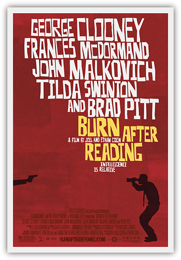

黑色幽默。
我觉得自己是理解这个词的意思的，但是又时常有点吃不准。我自认为幽默感还不错，各式幽默——喜欢的或者厌恶的——也都见过不少。但是当我说起黑色幽默这四个字的时候，脑海中很难浮现出一段精确的画面或者文字，然后说，看，这就是黑色幽默。
于是当我看到有人说《阅后即焚》是一部黑色幽默的电影的时候，我只能说，哦，似乎是这样子的。但是仍旧不免疑惑一下。
这并不是一个无关紧要的问题。事实上，这是观看这部电影的核心问题。如果任何人即将要去看这部电影，我的劝告是从一开始就把这个问题放在心里。这是来源于我自己的经验。粗粗浏览剧情介绍的结果是当我坐在电影院里的时候居然（多么大的一个“居然”）以为这是一部揭露中情局秘辛的剧情片。直到我醒过味儿来，电影已经过去了三分之一，而我多少有点被调戏的无奈感。
这是一部黑色幽默片，它的主旨不是任何确切的人生命题，而是荒诞本身。这是对这部影片的一切讨论的出发点。
可是我心里仍然多少有点迷惑。就算这是一部关于黑色幽默的影片，它一定也是不同寻常的一部，我直到看完三分之一才意识到它的主题是荒诞而非现实，这一事实本身也构成了一个悲哀的证据。这并不是说，我在头三分之一的时间里都在被剧情所吸引，事实上那段时间里我一直在困惑：一方面它微妙的游离于现实主义的叙事基调之外，另一方面它又如此煞有介事，以至于我始终觉得导演仍然在勉力支撑着叙事的节奏，只是多少有点失去了控制而已。
配乐是一个很好的例子。这部电影的配乐由科恩兄弟的老搭档Carter Burwell操刀，其效果在事后的评论里相当两极化。誉者以为其再完美不过的表现了电影的神经质氛围，毁者则称之为令人难于忍受的蛮横粗鲁。就我自己的感受而言，电影开始之后很长一段时间里我都只觉得这音乐过于装腔作势了。有必要用这么夸张的音量和节奏么？有必要在一部类似于《诺丁山》的都市街头场景里配上《碟中谍》似的打击乐么？
但是那真的是敬业而制作精良的配乐，一点也不是成心鼓吹的铜管或者怪模怪样的和弦，或者任何其他常见的把“幽默”两个字写在脑门上的音乐语汇。就只是正常的电影配乐，加上一点点夸张，和一点点失控感。
直到我终于醒悟过来之后，这种夸张感才有了一个稍稍有点合理的解释。——也只是稍稍而已。反过来它又显得那么正襟危坐道貌岸然，几乎到了让人恼怒的程度。既然你的目的是荒诞，那么那些足以激起肾上腺素的紧张鼓点又是为了什么呢？
这种错位感贯穿于整部电影的每一个方面。所有的角色的表演都呈现出同样的风格，神经质，夸张，愚蠢，但是又还没有到彻底解构的程度。里面有些人的表演非常好，比如约翰马尔科维奇和布拉德皮特，有些人的表演平平，比如乔治克鲁尼，但是每个人都活生生一付白痴模样。不是童话里可爱的小丑，不是真实世界里有血有肉的笨蛋，而是过于明显的被塑造和夸张出来的白痴。剧情也是如此，各种巧合显然过于精巧以至于没有任何真实性，但又没有精巧到带来哲学意味的程度，很多地方有点《巴别塔》的架势，可是在《巴别塔》里你看到了导演建立哲学结构的雄心，而这里只有一个赤裸裸的编造出来的故事，如此而已。
于是整部电影都弥漫着一种难以言喻的人造感。你看到的并不是一个理直气壮的后现代主义的荒诞剧，而是一个生涩的散发着荒诞气味的半成品。在这里，荒诞不是作为结果呈现出来的，而是作为过程被感受到的。你几乎可以听到导演的喃喃自语：这里需要一个什么效果的音乐，这里需要一种什么风格的表演，这里需要一个怎样的剧情转折，这里需要给台词里加上一个怎样的包袱，这里需要在墙上布置一个怎样的画像，诸如此类。我确实被逗笑了很多次，但是真正回荡在我心里的则是剧中各个角色都反复挂在嘴边的一句台词：What the fuck?（这他妈的是什么啊？）
直到离开电影院我都始终没有明白，究竟是科恩兄弟想拍一部态度严肃的后现代电影而失败了呢，还是这就是他们心里追求的效果——我承认这种效果在营造我内心的间离感这一点上做的异常成功。与其说这是一部荒诞电影，不如说，这是一部荒诞的荒诞电影。
黑色幽默么？也许吧。

October 4th, 2008 21:20
影评写的好
October 9th, 2008 13:26
感谢你这样一位已经脱离苦海的人还在关心这片土地的人。只可惜，像你这样的人，不管在国内还是国外都太少了。我身处苦海，却无法脱身，无法改变现状。好羡慕你们啊，可以站在远方遥望这片土地。不知道向往自由的我，什摸时候才可以看得到希望！
January 25th, 2010 00:48
哈，你说对了，只不过没有被电影带入而已，科恩兄弟就是惯用这种煞有介事的叙事风格营造极其荒诞的电影氛围，多看看他们的电影就习惯了，这是他们的卖点。我是全部都看过了的。
推荐《缺席的人》和《谋杀绿脚趾》